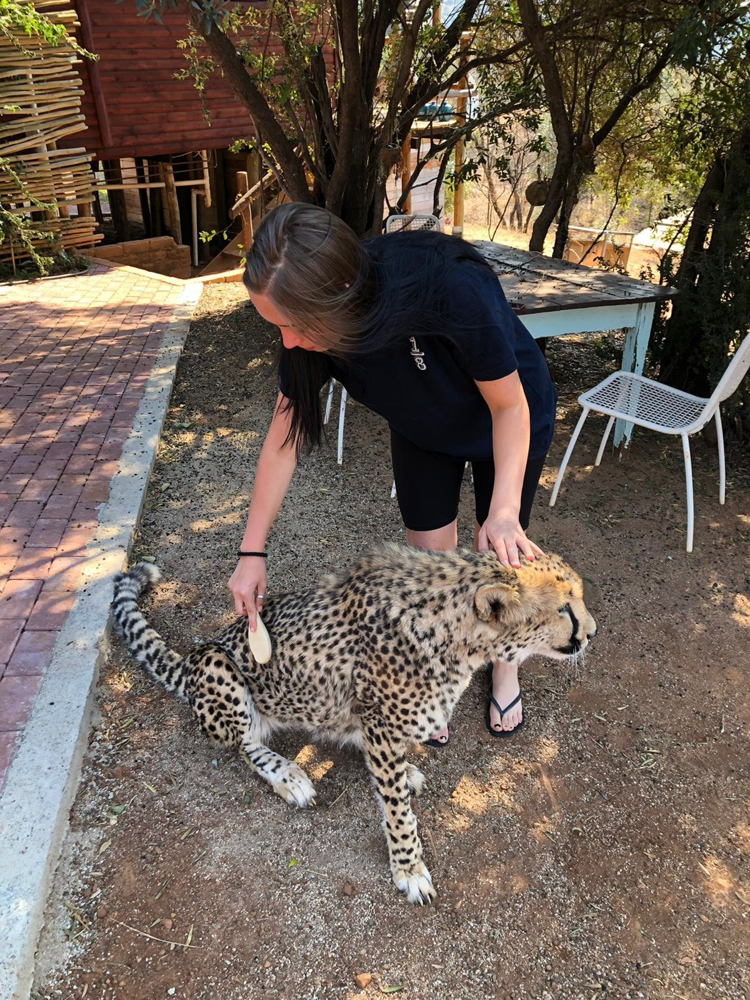

Limpopo is the northernmost province of South Africa. It is named after the Limpopo River, which forms the province's western and northern borders. It is a home of a number of threatened animals including cheetahs, leopards, meerkats and Siberian tigers.
The Limpopo River rises in South Africa[1] and flows generally eastward through Mozambique to the Indian Ocean. The term Limpopo is derived from Rivombo (Livombo/Lebombo), a group of Tsonga settlers led by Hosi Rivombo who settled in the mountainous vicinity and named the area after their leader. The river is approximately 1,750 kilometres (1,087 mi) long, with a drainage basin 415,000 square kilometres (160,200 sq mi) in size. The mean discharge measured over a year is 170 m3 (6,000 cu ft; 170,000 l; 44,900 US gal) per second at its mouth.[2] The Limpopo is the second largest river in Africa that drains to the Indian Ocean, after the Zambezi River.
The cheetah (Acinonyx jubatus) is a large cat native to Africa and central Iran. It is the fastest land animal, estimated to be capable of running at 80 to 128 km/h (50 to 80 mph) with the fastest reliably recorded speeds being 93 and 98 km/h (58 and 61 mph), and as such has evolved specialized adaptations for speed, including a light build, long thin legs and a long tail. It typically reaches 67–94 cm (26–37 in) at the shoulder, and the head-and-body length is between 1.1 and 1.5 m (3 ft 7 in and 4 ft 11 in). Adults weigh between 21 and 72 kg (46 and 159 lb). Its head is small and rounded, with a short snout and black tear-like facial streaks. The coat is typically tawny to creamy white or pale buff and is mostly covered with evenly spaced, solid black spots.
Here in a sanctuary she helped taking care of cheetahs. She was daily feeding them and from time to time also cleaning them. She spent here about two weeks and fell in love with the beautiful animals.
